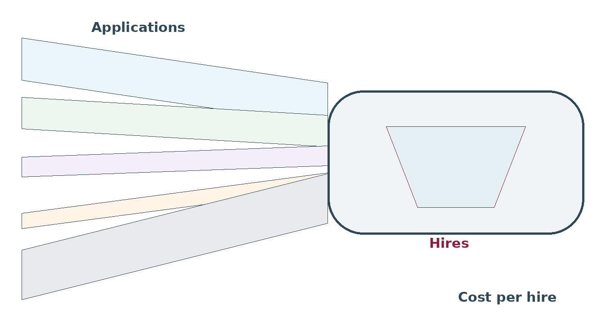

Decisions about where to spend advertising money usually get made on how many applications arrived — the one number that does not matter. What matters is hires, what they cost, and how they work out.
{kind=link}

Where they applied is not where they heard about you
Someone sees your job on a board, does not apply, searches your company a week later, and applies through your own site. Your system records that as direct.
Cancel the board and applications fall, for reasons nobody can trace. This is the most common reporting error in hiring, and it systematically makes your own website look better than it is and job boards look worse.
- Capture the first contact where you can — a tagged link that persists, not just the last click.
- Record both if your system allows it, and know which one a report is using.
- Treat self-reported answers as weak. "How did you hear about us?" gets "internet" and "a friend", and people often pick the first option in the list.
Report cost and quality, not volume
| For each source | Why |
|---|---|
| Applications | Only useful as background for the next line |
| Share getting through screening | A source sending 500 unsuitable people is a cost, not a source |
| Hires | The number that decides the budget |
| Cost per hire | Total spend divided by hires. Never by applications |
| Still there at 12 months, by source | The quality side almost nobody tracks |
| Time to hire, by source | Speed differences between sources are usually large |
That retention row is worth the effort. Sources differ in how long the people they produce stay, and a slightly more expensive source that produces people who stay is cheaper over any period longer than a year.
When to stop spending
- Volume with no hires. A source producing hundreds of applications and no hires costs you twice — the money and the screening time.
- Diminishing returns. Doubling the spend rarely doubles the hires. Watch what each extra hire costs, not the average.
- Overlap. Two sources reaching the same people means paying twice to reach them.
- Propping up a bad advert. Paying to show an unappealing job to more people buys more people not applying. Fix the advert first.
Errors to check for
| Error | Effect |
|---|---|
| Everything showing as "direct" or "other" | Your tagging is broken and the data is unusable |
| Agency hires inside a blended cost per hire | Makes every source look expensive |
| Comparing sources across different types of job | You are measuring job difficulty, not the source |
| Referrals credited to whoever submitted them | Hides which team is actually generating them |
| One hire counted against two sources | Totals stop adding up and trust in the report goes |
Small numbers again
With twenty hires a year across six sources, most sources have one or two hires each. That is not enough to rank them. Combine several quarters, report counts rather than percentages at low volume, and resist the pressure to declare a winner from a sample of three.
One table, every quarter
Source, spend, applications, how many got through screening, hires, cost per hire. Most teams find two sources producing nearly all the hires and four consuming most of the budget. The action is usually obvious once the table exists.